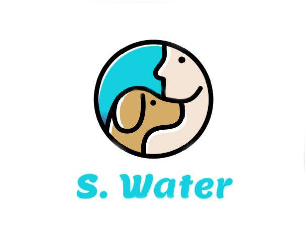

S.WATER
Share water with your four legged friend
S.WATER er en ekstraordinær vandflaske, som både dig og din hund kan drikke af og uden at du skal medbringe en hundeskål. Den smarte teknologi gør det muligt, at både du og din hund kan drikke af flasken når tørsten er størst - og endda uden hygiejneproblemer. Hvis din flaske skulle blive slidt, så kan du altid aflevere din gamle flaske til os, så genbruger vi materialet til at producere nye flotte flasker. Hvis du vælger at aflevere din flaske, får du 20% ved køb af en ny flaske. På den måde får du en flaske med rabat, og vi fokusere på at være gode for miljøet og bruge genbrugsmaterialer.
